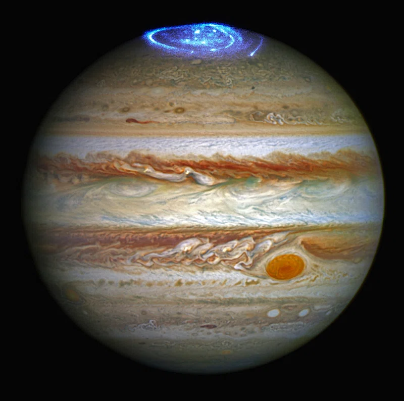

Júpiter
Júpiter es el quinto planeta del sistema solar y es el más grande de todos. Es conocido por su gran mancha roja, una tormenta gigante que ha estado activa durante siglos. Júpiter tiene una atmósfera compuesta principalmente de hidrógeno y helio, y su interior está formado por capas de gas y un núcleo rocoso. Además de su tamaño masivo, Júpiter también es conocido por tener una gran cantidad de lunas, con más de 70 lunas conocidas hasta la fecha.
Tabla de datos
| Característica | Valor |
|---|---|
| Distancia al Sol | 778.6 millones de km |
| Diámetro | 139,820 km |
| Masa | 1.898 × 10^27 kg |
| Gravedad | 24.79 m/s² |
| Temperatura media | -145 °C |
| Composición atmosférica | Hidrógeno (89%), helio (10%), otros elementos (1%) |
| Presión atmosférica | 100 veces la de la Tierra |
| Velocidad de rotación | 9.9 horas |
| Número de lunas | 79 |
Algunas de estas lunas, como Europa y Ganímedes, tienen océanos subsuperficiales de agua líquida, lo que ha llevado a especulaciones sobre la posibilidad de que puedan albergar vida. Júpiter también tiene un sistema de anillos, aunque son mucho más tenues que los de Saturno y no son tan visibles desde la Tierra.